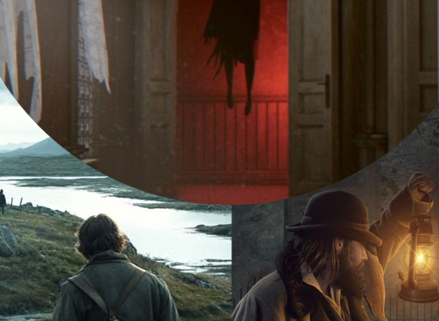
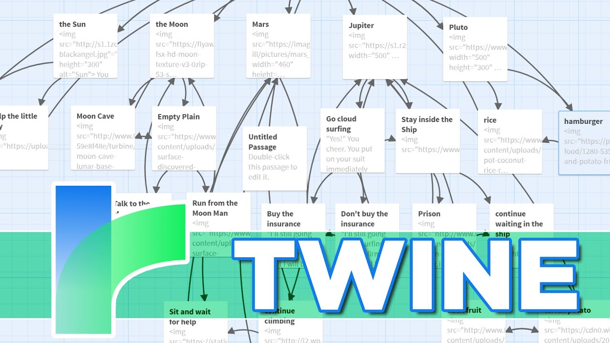

— Quest I —

Basinwick Shire: Cure of the Dying Village
- Narrative Design
- Quest Design
- Branching Dialogue
- RPG Systems
The Quest Board
Quest flows, branching dialogue, narrative structures, and worldbuilding documents.
The Guild Scribe
— Quest I —
— Quest II —

— Quest III —
